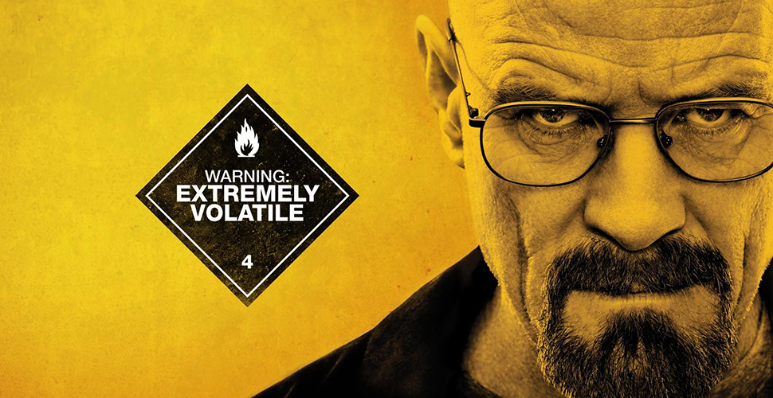
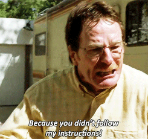

Bryan Cranston
Inicio
Biografia
Premios
Heisenberg en Breaking Bad de Netflix


Fecha de nacimiento:
7 de marzo de 1956
Nombre completo:
Bryan Lee Cranston
Lugar de nacimiento:
Los Ángeles
Ocupación:
Actor productor y director